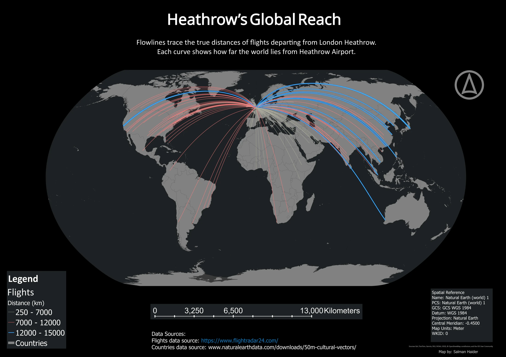
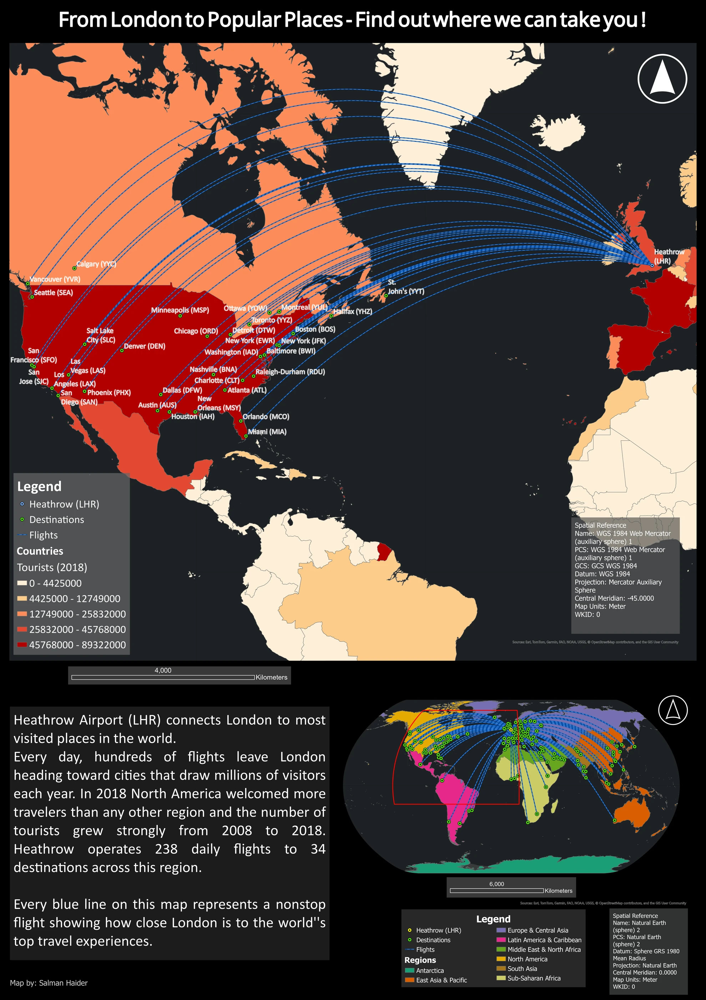

Cartography
Heathrow connections
I designed these maps to help a travel audience see where Heathrow connects, first across the world and then within North America. A table of airport names gives the destinations, but a map makes their spread and distance from London easier to understand.
I used arrivals and departures from 22 October 2018, with 2018 international tourism arrivals for the regional context. The result is a pair of historical travel map concepts.
- Flight snapshot
- 22 October 2018
- Tourism data
- 2018 international arrivals
- Outputs
- Global and North America layouts
- Tools
- ArcGIS Pro, Custom map projections, Flow mapping
Global connections


The longest distance class is highlighted in blue. The lines show how widely the 2018 connections extended from Heathrow; the source table includes both arrivals and departures.
Inspect details: Global connectionsShowing how far the network reaches
I connected the airport locations and grouped the global lines into three distance classes. A Natural Earth projection centred near Heathrow makes London the common origin of the visual pattern. I kept short connections quieter so the cluster around Europe would not hide longer links across the Atlantic, through Asia and as far as Australia.
Giving destinations room to be read
For North America, I enlarged the regional view, labelled the airports and used blue connections over country colours representing tourism arrivals. This lets a reader pick out destinations such as Vancouver, Calgary, Toronto and New York rather than just see a bundle of lines.
The two layouts could serve different parts of a travel presentation: the global map establishes the extent of the network, and the regional map supports a conversation about destinations. The lines connect airports rather than reproduce aircraft tracks. Tourism totals describe arrivals to countries, not passengers on the Heathrow routes, and the snapshot is not a current timetable.
North American destinations


The regional view makes the dense eastern group and the western destinations readable by name. Country shading is based on 2018 tourism arrivals, separately from the flight data.
Inspect details: North American destinationsData and references
- Flightradar24, arrival and departure snapshot from 22 October 2018 (opens in a new tab)
- Natural Earth country boundaries (opens in a new tab)
- UNWTO international tourism arrivals, supplied through the World Bank